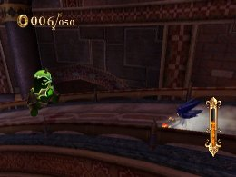
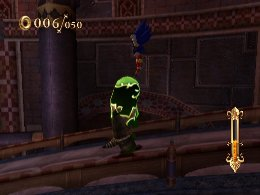
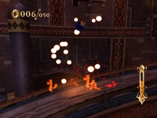

スピンアタックの活用法
基礎編
ソニックには意外と知られていない能力が隠されているのをご存知でしょうか。
敵を避けようとしてジャンプしたつもりが、敵に触れて逆に敵を倒してしまった経験をお持ちであれば、ソニックのその能力を体験しています。
その名も「スピンアタック」。
ソニックシリーズの経験者の方には馴染み深い能力ではありますが、ひみリンでの「スピンアタック」はチャージジャンプ中とジャンプアタック中に敵に触れた場合、そのままアタックを仕掛ける事が出来るのです。



攻撃判定は踏み切り直後から発生して着地まで持続
この性質を利用して、耐久力がそこそこある強敵ガーゴイル・ジンも「スピンアタック」使えば素早く倒す事が出来ます。
まず、ホーミングアタックを当てた後、ジャンプキャンセルをして地上に降り、そのままチャージジャンプを溜めてジャンプしてみましょう。
すると「スピンアタック」がガーゴイル・ジンにヒットするので、再びジャンプキャンセルからスピンアタックの繰り返しをすることで、簡単に倒せます。

ガーゴイル・ジンにダメージを与えるとロックオンをはずれてしまう
また、「スピンアタック」にはもう一つの効果として、ファイヤーポッドをすり抜けられる効果があります。
一見、ダメージを受けてしまいそうですが、どうしてもファイヤーポッドを避けられない人は「スピンアタック」を試してみると良いでしょう。
 RSS
RSS